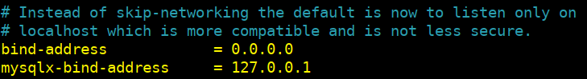
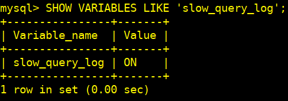
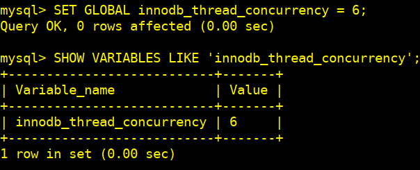

Práctica 4: Administración y Fine-Tuning del Servidor MySQL
1 - Configuración inicial
sudo apt update
sudo apt install mysql-server -y
sudo systemctl status mysql
Habilitamos MySQL para que se inicie automáticamente al arrancar el sistema:
sudo systemctl enable mysql
1.2 - Configuramos la conectividad en red
sudo nano /etc/mysql/mysql.conf.d/mysqld.cnf

Esto nos permite que MySQL acepte conexiones desde cualquier dirección IP. Guardamos y reiniciamos mysql
sudo systemctl restart mysql
1.3.- Configuramos una regla de seguridad para permitir el tráfico en el puerto 3306 (MySQL)

1.4 - Establecemos la contraseña inicial para root
sudo mysql -u root
alter user 'root'@'localhost' identified with mysql_native_password BY 'contraseña';
flush privileges;
exit
1.5 - Creamos un nuevo usuario con acceso desde cualquier IP y le otorgarmos permisos
mysql -u root -p
create user 'nuevo_usuario'@'%' identified by 'contraseña';
grant all privileges on *.* TO 'nuevo_usuario'@'%';
flush privileges;
exit
1.6 - Verificamos la conectividad remota
Probaremos la conexión desde otra máquina usando el cliente MySQL creado:
mysql -u nuevo_usuario -p -h <ip-del-servidor> -P 3306
1.7 - Aseguramos las cuentas de administración
sudo mysql_secure_installation

2 - Modificamos la configuración del servidor
2.1 - Verificamos la memoria total disponible en el servidor
free -h
sudo nano /etc/mysql/my.cnf
nnodb_buffer_pool_size
- Ajustamos este parámetro según la memoria disponible en nuestro servidor (70-80% de la memoria total), en nuestro caso hemos aplicado un 70%.
- Dividimos el
buffer poolpara mejorar la concurrencia.
Guardamos los cambios y reiniciamos MySQL
sudo systemctl restart mysql
Comprobamos el estado
sudo systemctl status myql

2.2 - Verificamos los cambios
mysql> "SHOW VARIABLES LIKE 'innodb_buffer_pool%';

3 - Activación y configuración de los registros
3.1 - Activamos el registro de consultas lentas
slow_query_log: Activa el registro de consultas lentas.long_query_time: Establece el umbral de tiempo para que una consulta se considere lenta (en segundos).slow_query_log_file: Define la ubicación y el nombre del archivo donde se guardarán las consultas lentas.
3.2 - Activamos el registro de consultas lentas
SET GLOBAL slow_query_log = 'ON';
3.3 - Establecemos un umbral de tiempo de 2 segundos para considerar una consulta como lenta
Previamente editamos este fichero para establecer el valor persistente a 2 segundos
sudo nano /etc/mysql/mysql.conf.d/mysqld.cnf
Descomentamos el valor en [mysqld]
Guardamos y reiniciamos mysql
sudo systemctl restart mysql
Ya en mysql
SET GLOBAL long_query_time = 2;
3.4 - Activamos el registro general y definimos la ruta del archivo de registro
SET GLOBAL slow_query_log_file = '/var/log/mysql/slow_query.log';

3.5 - Verificamos
SHOW VARIABLES LIKE 'slow_query_log'

SHOW VARIABLES LIKE 'long_query_time';

SHOW VARIABLES LIKE 'slow_query_log_file';
3.5 - Documentamos cómo activar y desactivar estos registros en caliente
SET GLOBAL slow_query_log = ON;
SET GLOBAL slow_query_log = OFF;
4 - Gestión de las conexiones y de los hilos
4.1 - Ajustamos el número máximo de conexiones concurrentes para garantizar un rendimiento óptimo
En este ejemplo hemos configurado un ajuste de 333 y luego lo hemos comprobado:

Si quisiermoa que este cambio fuera persistente después de un reinicio, editaríamos el fichero de configuración:
sudo nano /etc/mysql/mysql.conf.d/mysqld.cnf
[mysqld]
max_connections = xxx
Descomentaríamos el valor, guardando el cambio y reiniciando se servicio:
sudo systemctl restart mysql
4.2 - Configuramos el tiempo de espera de las conexiones para evitar saturaciones del sistema
El parámetro wait_timeout define el tiempo en segundos que MySQL esperará antes de cerrar una conexión inactiva.
wait_timeout: Se aplica a las conexiones no interactivas (por ejemplo, conexiones abiertas por aplicaciones web).interactive_timeout: Se aplica a las conexiones interactivas (por ejemplo, sesiones en la consola MySQL)
En caliente, de manera temporal
SET GLOBAL wait_timeout = 600; -- 10 minutos
SET GLOBAL interactive_timeout = 360; -- 6 minutos

Permanentemente
sudo nano /etc/mysql/mysql.conf.d/mysqld.cnf
[mysqld]
wait_timeout = 300
interactive_timeout = 300
sudo systemctl restart mysql
Apreciación: Valores muy bajos pueden cerrar conexiones antes de que se completen las operaciones, mientras que valores muy altos pueden llevar a una saturación de conexiones inactivas.
4.3 - Gestionamos el número de hilos disponibles para garantizar una correcta concurrencia
Ajustar el número de hilos disponibles puede mejorar la concurrencia, especialmente en sistemas con muchos núcleos.
thread_cache_size: Define cuántos hilos se mantendrán en caché para ser reutilizados, reduciendo la sobrecarga de creación de hilos.
En caliente, temporalmente

De manera constante
sudo nano /etc/mysql/mysql.conf.d/mysqld.cnf
[mysqld]
thread_cache_size = 50
sudo systemctl restart mysql
innodb_thread_concurrency: Limita el número de hilos que pueden acceder simultáneamente al motor de almacenamiento InnoDB.
En caliente, momentáneamente

De manera fija
sudo nano /etc/mysql/mysql.conf.d/mysqld.cnf
[mysqld]
innodb_thread_concurrency = 6
sudo systemctl restart mysql
5 - Configuración de la memoria caché
5.1 - Configura la memoria caché de tablas y consultas para mejorar la eficiencia de las operaciones
En caliente, de momento
De manera estable
sudo nano /etc/mysql/mysql.conf.d/mysqld.cnf
[mysqld]
Número máximo de descriptores de tabla abiertos
table_open_cache = 2000
Número máximo de definiciones de tabla que se pueden mantener en caché
table_definition_cache = 1500
Documenta los ajustes realizados y sus efectos en el rendimiento.